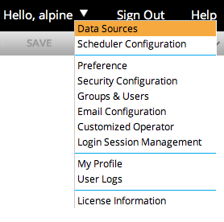
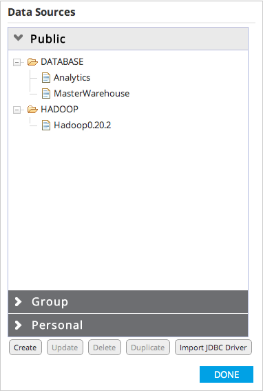
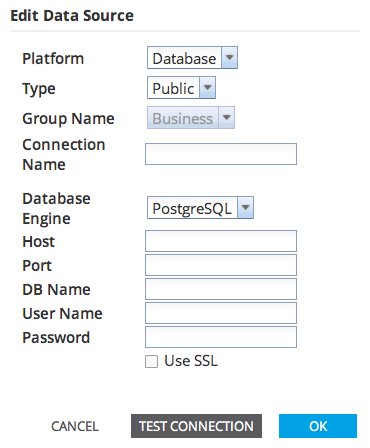
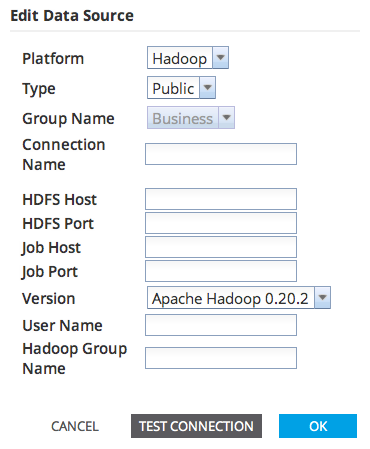

Data Source Management
The Data Sources management dialog is used for configuring and maintaining both database and Hadoop connection details.
To open the Data Sources management dialog, click the user drop down button (located to the right of your user name), then click the Data Sources button on the drop down menu.

The Data Sources management dialog displays all of the connections currently configured in Alpine.
The connections are organized in three groups within the dialog: Public, Group, and Personal.

The Public section displays 'public' connection information available for any user of the system.
The Group section displays connection information available to user groups. Alpine users can be members of zero or more groups (e.g. Marketing, Sales, IT, Analytics, etc.) and each group can be given access to specific database connections.
This section will display connections for groups of which the user is a member. Administrative users will be able to make changes to group database connections, while non-administrative users must copy a connection to personal before making changes.
The Personal section displays connections created by the user and connections copied from the Public and Group sections. These connections are only visible for the current user.
Some database systems may require an external JDBC driver be imported into Alpine for proper connectivity with the database. To import a JDBC driver click the 'Import JDBC Driver' button and choose the proper JDBC driver from the local filesystem.
To create a new connection for the selected section, click the 'Create' button to open the Edit Data Source dialog, seen below. Specify the Platform type and connection information and click 'OK'. Specifying a Group Name is only available when creating a connection in the Group section.
Follow the steps below to create a database connection:
- For a Database Connection:
- Platform: Database
- Type: Specify Public, Group, or Personal.
- Group: If Type: Group, specify a group name.
- Connection Name: Specify a unique name for identifying the connection.
- Database Engine: Specify the type of database.
- Host:Specify the IP address or hostname of the database server.
- Port:Specify the port number of the database.
- Database Name:Specify the name of the database to be connected.
- User Name:Specify the username with which Alpine will connect to the database.
- Password:Specify the password of the connecting user to the database.
- Use SSL:Specify whether to use SSL to connect to the database (only for PostgreSQL and Greenplum).
- (Optional) Test the connection by clicking on the 'Test Connection' button. The Data Source Connection Manager will try establishing a connection to the database using the parameters provided. A confirmation or failure message will be displayed based on the test result.
- Click the 'OK' button to save the connection.
To update a database connection, click on the connection name in the pane and click the 'Update' button. The connection dialog will open to display the current configuration for the selected database connection. Make the desired changes, test the connection, and click 'OK' to save the changes.
- Please note that if SSL is enabled and the server certificate is not signed by a global certificate authority recognized by Java, you will need to take the following actions to install the certificate on the client machine.
- Copy the certificate (server.crt) from the database server (make sure the server is configured to support SSL) the web-server hosting Alpine.
- Open the command line on that machine and go to the folder where server.crt is copied.
- Run the command : openssl x509 -in server.crt -out server.crt.der -outform der
- Run the command (you may need to run as root or an administrator): keytool -keystore $JAVA_HOME/lib/security/cacerts -alias postgresql -import -file server.crt.der
- Restart Alpine and you should be able to create a connection to an SSL-enabled PostgreSQL or Greenplum database.
- Please refer to this URL for more information: PostgreSQL JDBC/SSL Connections

Follow the steps below to create a Hadoop connection:
- For a Hadoop Connection:
- Platform: Hadoop
- Type: Specify Public, Group, or Personal.
- Group: If Type: Group, specify a group name.
- Connection Name: Specify a unique name for identifying the connection.
- HDFS Host: Specify the IP address or hostname of the HDFS server.
- HDFS Port:Specify the port number for HDFS.
- Job Host:Specify the IP address or hostname of the Job Tracker.
- Job Port:Specify the port of the Job Tracker.
- Version:Specify the version of Hadoop.
- User Name:Specify the username of the connecting user.
- Hadoop Group Name:Specify the password of the connecting user.
- (Optional) Test the connection by clicking on the 'Test Connection' button. The Data Source Connection Manager will try establishing a connection to the Hadoop server using the parameters provided. A confirmation or failure message will be displayed based on the test result.
- Click the 'OK' button to save the connection.
To update a Hadoop connection, click on the connection name in the pane and click the 'Update' button. The connection dialog will open to display the current configuration for the selected Hadoop connection. Make the desired changes, test the connection, and click 'OK' to save the changes.
